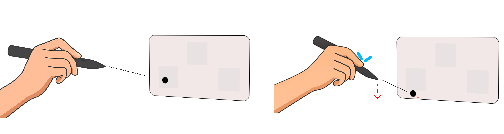
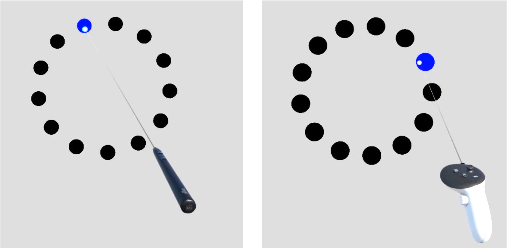

Could the Stylus Be Mightier Than the Controller?
An investigation into the Heisenberg Effect of Spatial Interaction for 3D tracked styluses, comparing the Logitech MX Ink against a standard Meta Quest controller.
Read the Full Paper (CHI EA '26)
Problem — The Heisenberg Effect
The Heisenberg Effect of Spatial Interaction is a phenomena where the physical act of pressing a button causes unintended device movement, reducing precision and often causing the user to slip off their target. While well documented for standard VR controllers, this effect was unexplored for 3D-tracked styluses. It is usually only compensated for in software, and styluses — held with a lighter, precision grip — may potentially amplify its impact.
Why Styluses For XR?
Styluses leverage the existing familiarity of traditional pens. They use a precision grip that is often lighter and more controlled than a standard controller, and are well-suited for complex 3D activities such as sketching and precise object manipulation.
Methodology
We conducted a preliminary study (n=11) comparing the Logitech MX Ink against the Meta Quest 3 controller in pointing and selection tasks. We tested actuation finger (Index vs. Thumb) across two distinct tasks:
- Rapid: Fast, accurate target acquisition.
- Stabilised: Stabilise cursor before selection — isolating pure displacement.
We captured three core metrics: Heisenberg Error Rate (errors directly caused by the effect), Heisenberg Magnitude (angular displacement of the device), and Performance (overall error rate and effective throughput).

Findings
- Stylus reduced selection errors: Fewer overall and fewer Heisenberg-related errors.
- Stylus was more efficient: Higher effective throughput.
- Thumb increased instability: Greater Heisenberg displacement and more Heisenberg error on both devices.
- Displacement ≠ Error: The stylus had higher displacement, yet fewer errors — the precision grip is better at absorbing involuntary movement.
Takeaways and Design Implications
- Stylus Form Factor Advantage: The precision grip offers greater resistance to displacement, making it more stable for selection.
- Mitigation, Not Elimination: Styluses reduce the Heisenberg Effect, but they do not fully eliminate it.
- Biomechanics in Play: Index fingers apply stable, linear force. The thumb introduces unstable rotational torque.
- Index-First Design: To maximise stability, future XR peripherals should prioritise index-finger actuation.
- Software compensation alone may not suffice: Software masks the issue. Adjusting grip style and actuation finger through hardware design appears more effective.
The Big Question
Is the standard software compensation sufficient, or is biomechanics (grip, actuation finger) the key?
Our findings suggest software compensation alone may not be enough. Form factor and actuation biomechanics need to be co-designed to truly address the Heisenberg Effect.
Publication
Kieran Waugh, Mario Gutierrez, and Aidan Kehoe. 2026. Could the Stylus Be Mightier Than the Controller?: An Investigation Into the Heisenberg Effect of Spatial Interaction for 3D Tracked Styluses. In Extended Abstracts of the 2026 CHI Conference on Human Factors in Computing Systems (CHI EA '26), April 13–17, 2026, Barcelona, Spain.
Back to all projects